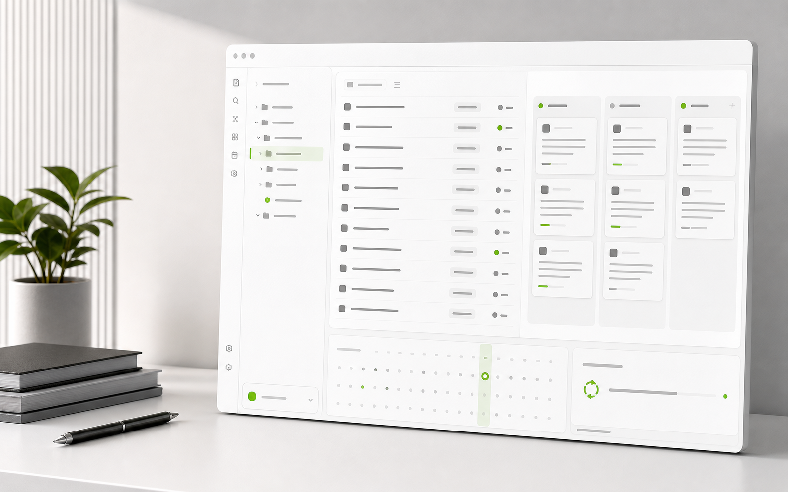

Dashboard
Scan active projects, category filters, progress, and burndown shape.
Folders become projects. Notes become tasks. Views and TickTick sync keep the vault moving.

Neseser does not ask you to move project planning into another app. Each project remains a folder. Each task remains a note. The plugin adds planning surfaces on top of that plain-file model.
Projects
Research
Literature review.md
Dataset audit.md
Training
Monday intervals.md
Recovery notes.md
Work
Launch checklist.md
Vendor call.mdThe same task index powers focused daily work, project health, schedule review, timeline planning, and drag-friendly task flow.
Scan active projects, category filters, progress, and burndown shape.
Focus on current tasks without leaving the vault.
FocusMove tasks across stages with status updates written back to notes.
FlowReview due dates and reschedule work from the planning surface.
DatesTrack longer project timelines when sequence matters.
TimelineOpen the right Neseser surface quickly from one control point.
CommandConnect TickTick from plugin settings, set an automatic sync cadence, and keep status visible while Neseser handles retries and token state.
Use BRAT for the fastest beta install path, or download the latest release and place the plugin folder in your vault manually.
https://github.com/Czarnak/neseser
.obsidian/plugins/neseser/ as the folder path.